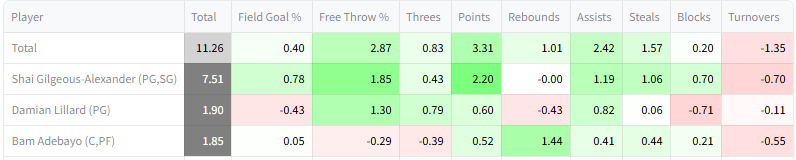

G-scores
It is well-understood that player value in category leagues is dependent on context. No single number, independent of circumstances around team, opposition, etc. can ever fully define a player's value. However, that has not stopped fantasy enthusiasts from designing and applying so-called 'static' ranking systems. Despite their limitations in theory, they are useful in practice because they are simple and convenient. One ought not let the perfect get in the way of the good.
The website uses G-scores as a measure of static value. G-scores are a variant of the traditional Z-score metric, as described in my first paper. See also the justification section of this page for a relatively simple explanation.
G-score table

During auctions and drafts, a tab will be available with the G-score table for available players. The G-score table shows available players ordered by total G-score during drafts and auctions. It includes the categorical components of G-scores as well.
Team table

The team table shows the G-scores of players already chosen for a team, and their totals. The totals show how the team is doing in general, though one should keep in mind that non-turnover categories tend to have high values during early rounds because only the strongest players are being taken.
Justification
Warning- math 

What are Z-scores?
Fantasy basketball has a standard way of quantifying player value across categories, called 'Z-scoring', and it is used to make objective rankings of players.
You may have come across Z-scores in a stats 101 class. In that context, they are what happens to a set of numbers after subtracting the mean (average) signified by \(\mu\) and dividing by the standard deviation (how “spread out” the distribution is) signified by \(\sigma\). Mathematically, \(Z(x) = \frac{x - \mu}{\sigma}\).
Z-scores in the fantasy context are essentially the same thing, with a few minor modifications. They take a player's expected performance in a category, subtract out the average from the paper pool, and divide by the standard deviation.
Justifying Z-scores
Consider this problem: Team one has \(N-1\) players randomly selected from a pool of players, and team two has \(N\) players chosen randomly from the same pool. Which final player should team one choose to optimize the expected value of categories won against team two, assuming all players perform at exactly their long term mean for a week?
The difference in category score between two teams tells us which team is winning the category and by how much. By randomly selecting the \(2N -1\) random players many times, we can get a sense of what team two's score minus team one's score will be before the last player is added. See this simulation being carried out for blocks below with \(N=12\)
You may notice that the result looks a lot like a Bell curve even though the raw block numbers look nothing like a Bell curve. This happens because of the surprising "Central Limit Theorem", which says that when adding a bunch of random numbers together, their sum always ends up looking a lot like a Bell curve.
The mean and standard deviation of the Bell curves for category differences can be calculated via probability theory. Including the unchosen player with category average \(m_p\) - The mean is \(m_\mu - m_p\) - The standard deviation is \(\sqrt{2N-1} * m_\sigma\) (The square root in the formula comes from the fact that \(STD(X + Y) = \sqrt{STD(X)^2 + STD(Y)^2}\) where \(STD(X)\) is the standard deviation of \(X\))
When the category difference is below zero, team one will win the category
The probability of this happening can be calculated using something called a cumulative distribution function. \(CDF(x) =\) the probability that a particular distribution will be less than \(x\). We can use \(CDF(0)\), then, to calculate the probability that the category difference is below zero and team one wins.
The \(CDF\) of the Bell curve is well known. The details of how to apply it to this case are somewhat complicated, but we can cut to the chase and give an approximate formula
We already know \(\mu\) and \(\sigma\) for the standard statistics. Substituting them in yields
Hey look, that's the Z-score! We can see that an extra point of Z-score translates into an increased probability of winning the category in a consistent way.
Extending to G-scores
To justify Z-scores, we assumed that each player would perform precisely at their long-term mean. But that was a bad assumption, because players don't perform consistently week-to-week. We can improve the question by assuming that players are chosen randomly and their performances are chosen randomly too.
Below, see how metrics for blocks change when we look at every weekly performance of the top \(156\) players, instead of just their averages
Although the mean remains the same, the standard deviation gets larger. This makes sense, because week-to-week "noise" adds more volatility, which is reflected in the additional \(m_\tau\) term. Note that the new standard deviation is \(\sqrt{m_\sigma^2 + m_\tau^2}\) rather than \(m_\sigma + m_\tau\) because of how standard deviation aggregates across multiple variables, as discussed previously
Also keep in mind that for Rotisserie, the uncertainty is in season-long performance, rather than week-by-week variance.
G-scores are what we get when we substitute in the new standard deviation. they are
Calculation
The coefficients for G-scores used by the website were calculated based on real historical data, as shown in the paper. One should not that real week-to-week variance in historical data is not necessarily the same thing as forecasted variance for future weeks, so the week-to-week variance factor may be too strong or too weak in practice.